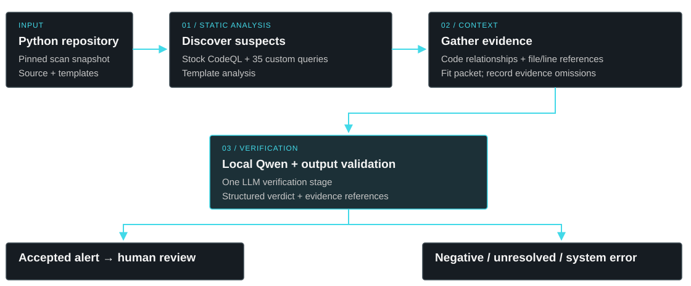
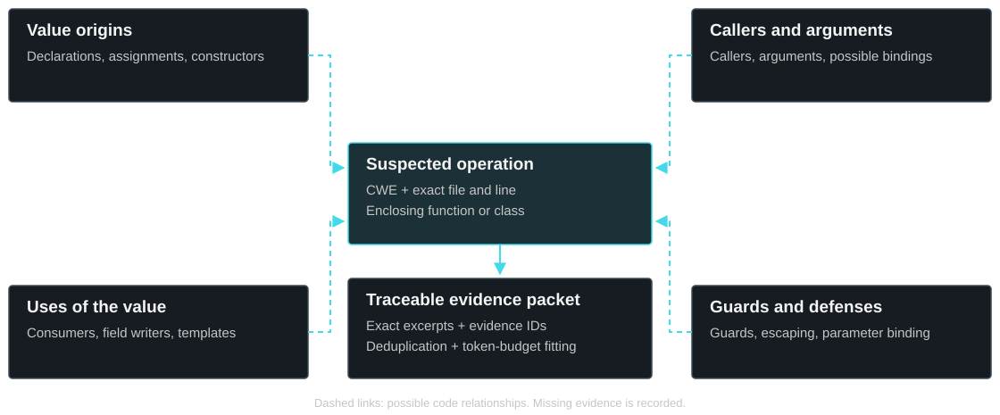

Coverage
Can reusable static suspect queries surface vulnerable operations that stock CodeQL misses?
School of Computing · Queen’s University
Investigating how static analysis and local language models can work together to detect Python vulnerabilities—with evidence that a reviewer can inspect.
Stock CodeQL + 35 custom queries + template analysis
Definitions, assignments, callers, uses and defenses
Local Qwen verification + structured output validation
The current pipeline uses one LLM verification stage after static discovery. Findings, unresolved decisions and failures remain traceable.
The project studies coverage, verification quality and the practical cost of collecting enough evidence to make a security decision.
Can reusable static suspect queries surface vulnerable operations that stock CodeQL misses?
Can a local model retain real vulnerabilities while rejecting safe operations, using focused repository evidence?
What limits generalization, runtime and dependable local deployment?
Contributions include reusable suspect queries, automatic evidence collection, traceable evaluation records and a local CLI/dashboard prototype.

Primary patterns: native Python and selected Flask inputs and responses. Jinja2, SQLAlchemy and Django have partial, pattern-dependent coverage; FastAPI/Starlette integrations remain exploratory (thesis Table 4.2).
CWE-22Untrusted paths reaching file operations.
CWE-78Untrusted values entering command execution.
CWE-79Unsafe input rendered into web output.
CWE-89Untrusted data altering SQL structure.
The reported operation anchors automatic collection. The model receives focused code with source references, rather than the whole repository.

An actual archived decision from the educational DSVW repository. The evidence packet was gathered automatically; the excerpt below is only part of its context.
dsvw.py:30 Model verdict: vulnerable# Evidence block E54be03637e · selected operation
cursor.execute(
"SELECT id, username, name, surname FROM users WHERE id="
+ params["id"]
)User input params["id"] is concatenated directly into the SQL query string without parameterization.
The prototype exposes scan workflows through a CLI and dashboard, with repository workers and model inference provisioned on your infrastructure.
No hosted scan service, external fonts or telemetry is required. Configure inference within your machine or company network.
Project registration, workspace membership, scan jobs and human review states organize the workflow.
Unchanged scans can be skipped and valid decisions reused. Changed scans still run CodeQL across the full snapshot and gather fresh context.
Git changes, evidence dependencies and configuration
Full repository analysis → fresh evidence → local verification
Reuse valid saved results when the exact snapshot and required configuration match.
Whole-repository CodeQL + fresh context. Reuse verifier decisions only when evidence and configuration still match.
The approach evolved as tests exposed gaps in discovery, context, model reasoning and cost. Unsuccessful experiments are part of the record.

Three evaluations, one comparison format: precision, recall and F1. Repository results cover selected labeled operations; benchmark results cover all official tests in our four-CWE scope.
Historical configuration. 113 vulnerable and 92 negative operation labels; two unknown labels excluded. Projects were used during development.
| Approach | Precision | Recall | F1 |
|---|---|---|---|
| Stock CodeQL | 97.7% | 38.1% | 54.8% |
| OpenSAST | 97.2% | 92.9% | 95.0% |
Current evaluated configuration. October 8. Seven vulnerable and seven repaired operations across six of seven projects; seventh exploratory. Projects were previously investigated, so this is not an unseen-project test.
| Approach | Precision | Recall | F1 |
|---|---|---|---|
| Stock CodeQL | 40.0% | 28.6% | 33.3% |
| OpenSAST | 80.0% | 57.1% | 66.7% |
Current evaluated configuration. All 293 official cases for our four CWEs: 114 vulnerable and 179 negative. Synthetic benchmark, previously exposed during development.
| Approach | Precision | Recall | F1 |
|---|---|---|---|
| Stock CodeQL | 43.1% | 49.1% | 45.9% |
| OpenSAST | 55.0% | 72.8% | 62.6% |
The master’s project team at the School of Computing, Queen’s University.
Master’s project team · 25TFGF
School of Computing · Queen’s University
Master’s project team · 25FFPW
School of Computing · Queen’s University
Master’s project team · 25KQSH
School of Computing · Queen’s University
Academic supervisor
School of Computing · Queen’s University
We are deeply grateful to Eng. Sameh Zaghloul and Eng. Ahmed Soliman of Fixed Solutions for their support throughout our project journey. Their support has meant a great deal to all three members of our team.
Chief Technology and Innovation Officer (CTIO)
Fixed Solutions
Security Operations Center (SOC) Manager
Fixed Solutions
The final Phase-2 report and supporting resources document the architecture, methods, outcomes and limitations.
From an existing source checkout
bash scripts/install.sh